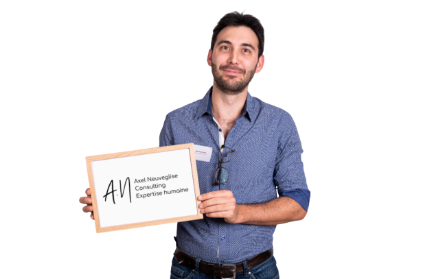

Accompagnement psychologique et thérapeutique sur-mesure à Canet-en-Roussillon. Un cadre éthique, structuré et bienveillant pour traverser les épreuves, apaiser l'anxiété et retrouver clarté et sérénité.
Thérapeute, Coach & Formateur
Approche pluridisciplinaire · Thérapies brèves
Un espace neutre, sécurisant et soumis au secret professionnel absolu.
Intégration d'outils thérapeutiques validés et éprouvés en psychologie.
Thérapie brève axée sur l'autonomie et la résolution active des schémas.
Accompagnement humain sans jugement, adapté à votre rythme personnel.
Chaque personne est unique. Les approches sont choisies et adaptées à votre situation afin de proposer un accompagnement pertinent.
Permet de comprendre et déconstruire les motifs comportementaux et émotionnels répétitifs appris dès l'enfance qui entravent votre épanouissement actuel.
La thérapie des schémas est une approche thérapeutique intégrative, développée par Jeffrey Young. Elle s’appuie notamment sur les théories de l’apprentissage et la psychologie cognitive, et intègre des apports de la théorie de l’attachement et de certains courants psychodynamiques.
Elle vise à explorer et à comprendre les processus, parfois inconscients, qui influencent les pensées, les émotions et les comportements, ainsi qu’à repérer les schémas répétitifs qui se sont construits au fil de l’histoire de vie.
À l’aide d’échanges, de questionnaires et d’autres supports, le travail aide à prendre conscience de ses automatismes et à comprendre leur origine. Cette prise de recul peut ensuite permettre de faire évoluer les schémas qui entravent le quotidien.
Approche pragmatique centrée sur la modification des pensées négatives et des comportements dysfonctionnels au quotidien.
Les thérapies cognitives et comportementales (TCC) s’appuient sur les théories de l’apprentissage et la psychologie cognitive. Elles visent à explorer et à modifier les interactions entre les pensées, les émotions et les comportements, ainsi qu’à repérer les mécanismes qui les entretiennent.
Les TCC sont utilisées pour accompagner de nombreuses difficultés, notamment les troubles anxieux (phobies, TOC, anxiété sociale), la dépression, l’état de stress post-traumatique, les troubles du comportement alimentaire, certaines addictions, les troubles du sommeil et les difficultés liées à la gestion du stress. Pour les TOC, elles peuvent notamment inclure une exposition avec prévention de la réponse.
En cas d’addiction ou de conduite à risque, l’accompagnement psychologique peut être associé à un suivi médical ou spécialisé selon la situation. Les besoins diffèrent d’une personne à l’autre et un accompagnement adapté peut nécessiter une évaluation spécialisée.
Découvrir les TCC (Association française de thérapie comportementale et cognitive)
Un accompagnement structuré pour travailler sur des souvenirs traumatiques et les réactions émotionnelles associées.
Le terme « neurothérapie » recouvre des approches différentes : leurs indications et leur niveau de validation ne sont pas identiques. La neuroplasticité désigne la capacité du cerveau à se remodeler et à se réorganiser.
Ces approches peuvent être utilisées dans l’accompagnement de difficultés psychologiques et de blessures émotionnelles ou traumatiques. Elles ne sont pas indiquées pour tout deuil : le choix dépend de la situation et des besoins de la personne.
L’EMDR est une approche thérapeutique qui utilise des stimulations bilatérales, notamment visuelles ou sonores, afin de faciliter le traitement de souvenirs traumatiques.
Elle peut aussi être envisagée pour certaines phobies ou difficultés anxieuses, selon la situation et après évaluation. Les approches et leur niveau de validation varient selon le trouble.
Des exercices de respiration, de détente et de visualisation pour développer une meilleure écoute du corps et mobiliser ses ressources.
La sophrologie est une méthode psychocorporelle qui combine respiration, détente musculaire et visualisation positive pour favoriser l’harmonie du corps et de l’esprit. Ses exercices, simples et accessibles, se pratiquent assis ou debout et invitent à se reconnecter à ses sensations.
Au fil des séances, cette pratique aide à développer la conscience de soi, à mieux réguler ses émotions et à mobiliser ses propres ressources. Elle offre un temps de pause et d’écoute qui peut favoriser le calme et le lâcher-prise.
Elle peut accompagner les périodes de transition ou de vulnérabilité, et contribuer au bien-être, à la confiance en soi et à la gestion du stress et de l’anxiété. Elle est également utilisée pour la préparation aux examens ou à la parentalité, le sommeil et l’accompagnement de la douleur chronique.
Après un choc émotionnel ou un traumatisme du passé, elle peut contribuer à la détente et au recentrage en complément d’un accompagnement adapté. Elle ne constitue pas un traitement du traumatisme et ne remplace pas une prise en charge spécialisée si nécessaire.
Elle ne remplace pas une évaluation ou un suivi adapté lorsque les difficultés sont importantes.
Découvrir la sophrologie en pratique (Société Française de Sophrologie)
Transmission de clés psychologiques et neuroscientifiques claires pour devenir pleinement acteur et autonome de sa santé mentale.
L’éducation thérapeutique est une démarche d’accompagnement qui transmet aux personnes concernées et à leur entourage des connaissances scientifiques et pratiques sur une difficulté ou un trouble, son origine et ses mécanismes de maintien.
Ce processus d’apprentissage peut s’intégrer au début ou tout au long de l’accompagnement. À l’aide de supports pédagogiques, d’échanges guidés et de situations concrètes, il aide à mieux repérer ses symptômes, à comprendre les déclencheurs de ses difficultés et à déculpabiliser face à ce que l’on traverse.
L’objectif est de faire de la personne un véritable partenaire de son accompagnement, en renforçant son autonomie, sa compréhension de soi et son engagement actif. Cette démarche peut soutenir la prise en charge de nombreuses difficultés.
Consulter les repères de la Haute Autorité de santé sur l’éducation thérapeutique
Accompagnement bienveillant des parents et des enfants pour apaiser les tensions familiales et rétablir la communication.
La guidance parentale accompagne les parents pour mieux comprendre les besoins de leur enfant et ajuster leurs réactions face aux difficultés éducatives ou comportementales du quotidien. Dans un espace d’écoute et de conseils personnalisés, elle aide à mieux comprendre les émotions, les tensions et les dynamiques familiales.
Au fil des séances, les parents peuvent acquérir des outils concrets et des stratégies bienveillantes pour poser un cadre structurant, désamorcer les conflits et favoriser la coopération avec leur enfant.
L’objectif est d’apaiser le climat familial, de restaurer la confiance parentale et de renforcer le lien d’attachement. La guidance peut être utile face aux difficultés de comportement, à l’anxiété de l’enfant, aux oppositions répétées ou aux périodes de transition, notamment l’adolescence.
Consulter le guide de guidance parentale en FALC (handicap.gouv.fr)
Un espace de dialogue accompagné pour mieux comprendre les difficultés relationnelles et explorer de nouvelles façons de communiquer.
En cas de violence, d’emprise ou de peur, la sécurité et un soutien individuel passent d’abord : la thérapie de couple n’est pas adaptée d’emblée.
La thérapie de couple propose un cadre de parole où chacun peut exprimer son vécu et écouter celui de l’autre. Avec l’aide du thérapeute, le couple peut repérer les cycles d’incompréhension, clarifier ses besoins et travailler sur la communication et les attentes réciproques.
Elle peut accompagner des conflits répétés, une période de transition ou un éloignement relationnel. Elle ne vise pas nécessairement à maintenir la relation : elle aide à réfléchir à la suite de façon plus claire et respectueuse.
La démarche suppose que les deux personnes puissent participer librement et en sécurité. En cas de violence, de contrôle ou de peur dans la relation, une thérapie conjointe n’est pas adaptée d’emblée : un accompagnement individuel et des ressources spécialisées sont prioritaires.
En savoir plus sur la thérapie de couple (article en français)

Double compétence : Clinique & Entreprise
Aujourd’hui, les thérapies brèves offrent bien plus qu’un simple espace de parole : elles proposent un cadre actif de rencontre et de travail sur soi. Selon la situation, elles peuvent favoriser des évolutions en quelques séances. Le rythme et la durée de l’accompagnement varient toutefois selon les besoins de chacun.
Mon approche repose sur la conviction que **chaque individu possède en lui les compétences pour évoluer**, dès lors qu'il bénéficie d'un cadre structuré, sécurisant et des bons outils d'analyse.
« Le paradoxe curieux, c’est que lorsque je m’accepte tel que je suis, alors je peux changer. » Carl Rogers, On Becoming a Person (1961)
Consultez les disponibilités et réservez directement avec Google Agenda.
Des consultations claires, sans engagement de durée, adaptées à votre rythme.
Individuelle • Cabinet ou Téléconsultation
Accompagnement + Entretien Parental
Coaching · Formation · Conseil
Retours d'expérience authentiques sur l'accompagnement
« Un thérapeute très professionnel et qui apporte un réel accompagnement en s'adaptant aux possibilités de chacun en terme de travail et de profondeur de la thérapie. Je me sens beaucoup plus serein aujourd'hui autant dans ma vie personnelle que professionnelle. Je recommande »
« Axel maîtrise son sujet. C’est une personne d’une grande bienveillance et il est d’une grande aide dans le développement de soi. Je recommande vivement ! »
« Axel Neuveglise. Un prénom et un nom qui en disent déjà beaucoup. Et les séances ont confirmé le présage : un véritable accélérateur de prises de conscience et une remise à neuf pour aller vers la meilleure version de soi-même. Son esprit d'analyse lui permet de comprendre très rapidement les situations exposées et de mettre en oeuvre les outils adéquats pour un accompagnement pertinent et percutant. Les résultats ont été au rendez-vous dès la première séance lors de laquelle il m'a proposé un atelier avec des cartes issues de sa création. N'allez pas le voir si vous tenez à cacher des parts de vous, il met de la lumière partout où il y a de l'ombre ! Un guide précieux sur mon chemin de vie. Merci 🙏 »
« Les séances sont extrement riches en émotions et me permettent d'avancer à vitesse grand V. De nature réservée, je me reconstruis, pas à pas vers un véritable moi de conscience et de bonheur, que j'ai encore du mal à décrire mais que je ne cesse de ressentir. C'est donc chargée d'émotions positives, que je vous recommande Axel Neuveglise. Un grand merci Axel. »
« Cette rencontre et le travail effectué avec lui, d’une simplicité enfantine mais d’un pouvoir thérapeutique impressionnant, a littéralement positivement changé ma vie.Ses techniques sont simples et sa manière de les expliquer humaine et patiente. Je fais depuis appel à lui quasiment chaque semaine, tel un coach. M’ayant inspiré de suite confiance j’ai suivi à la lettre ses recommandations et me suis sorti rapidement d’une rupture compliquée et résous lentement les noeuds dans mon psychisme. Je souhaite à quiconque ayant besoin d’aide ou de soutien de tenter la rencontre avec Axel,je le trouve très crédible et humble »
« Un thérapeute très compétent. Il m'a aidé à accepter mon moi conscient ainsi que ce que je refoulais. Axel Neuveglise m'a vraiment aidé à aller mieux, à me centrer sur moi et à régler les problèmes dans ma vie. Ne perdez pas votre énergie, si vous avez besoin, n'hésitez plus, franchissez le pas. »
« Axel vous permettra de faire un travail de fonds sur les émotions qui contrôlent l’être, et de revenir à l’essentiel de nos propres valeurs. Mieux comprendre qui on est reste la clef pour vivre et apprécier la vie ! Mille mercis à Axel. »
« Merci Axel de m’avoir accompagnée dans la reconnaissance et la libération de mes émotions. Je suis aujourd’hui plus confiante et épanouie à être qui je suis. Je ne peux que recommander ton accompagnement et je te souhaite pleins de belles choses pour la suite. »
« Une très belle expérience réalisée par un grand professionnel. Merci pour pour implication et votre dévouement. »
Le cabinet est idéalement situé à Canet-en-Roussillon, dans un environnement calme et accessible avec stationnement facilité.
25 avenue Guy Drut, Bureau 5
66140 Canet-en-Roussillon
Du lundi au vendredi : 09h00 – 19h00
Samedi matin : sur rendez-vous uniquement
Séances disponibles en Visioconférence sécurisée.
Pour toute question ou demande d'information préalable à un rendez-vous.
Votre messagerie s’ouvrira avec le message préparé. Vous pourrez le vérifier et l’envoyer depuis votre application.